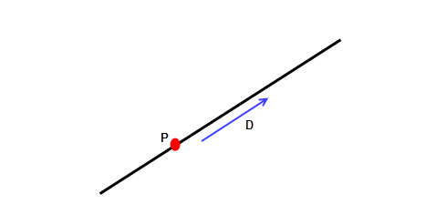
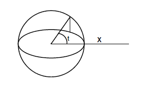
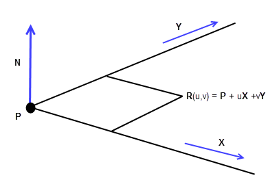
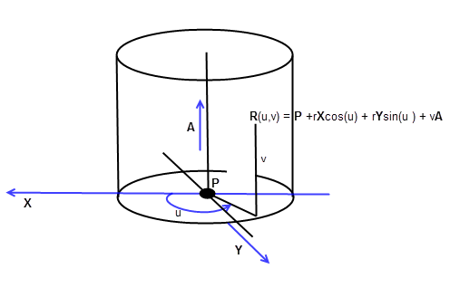
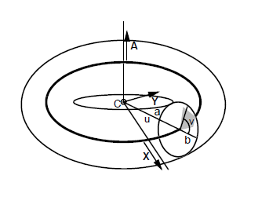
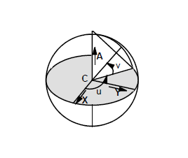
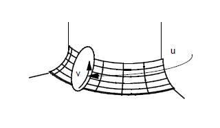
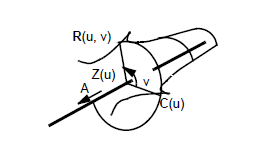

| |
Geometry |
| <<< Session And Local Precision | Chapters | B-Curves And B-Surfaces >>> |
The main purpose of geometric entities is when attached to a topological entity.
See Section 14.3, “Geometric entities” for more information on the types of geometry.
There are four classes of geometric entity:
Figure 17-1 The GEOM class and its subclasses
Geometric entities can be shared within a single body and in some cases between bodies. See Section 14.3.5, “Geometry sharing” and Section 15.13, “Compound bodies” for more information.
Parasolid supports nominal geometry, which is a mechanism by which edges with local precision may reference a notional accurate curve. See Chapter 19, “Nominal Geometry” for more information.
B-curves and B-surfaces are fully integrated into Parasolid so you can attach them to edges and faces and apply any relevant Parasolid operation to them just as you would any other type of curve or surface. See Chapter 18, “B-Curves And B-Surfaces” for more information.
For a mathematical description of B-curves and B-surfaces See Chapter B, “The Mathematical Form Of B-Geometry”.
The following functions are used to attach geometry to edges, fins, faces and vertices:
The following functions are used to detach geometry:
|
Detaches a nominal curve from a tolerant edge if one is present |
|
|
Removes any geometry that is also in the |
|
You can also replace the existing geometry of a face using either PK_FACE_replace_surfs_3 or the
replace
operation in PK_FACE_change.
This chapter discusses the following:
This section describes the standard forms of classic geometry that are used in Parasolid. Standard forms are ways of describing geometric information in a standard way for communication with applications.
|
Note: The application is responsible for allocating the space for the standard form, but it does not need to initialise any of the fields. |
The following table lists the standard forms of geometry and what functions they are used in.
Standard forms are also used in Convergent Modeling. See Section 85.4.1, “Creating bodies from a mesh” for more information.
|
Note: An intersection curve is a type of curve of the class PK_CLASS_icurve. These curves do not have a standard form. These curves are created when surfaces are intersected and the intersection cannot be represented by one of the analytic curves. See Section 17.3.1.5, “Intersection curve” for more information. |
PK_BCURVE_sf_t is the standard form of a b-curve. It contains fields to specify:
PK_BCURVE_ask returns the standard form for a b-curve. PK_BCURVE_create uses the standard form to create a b-curve. See PK_BCURVE_sf_t for more information.
PK_BCURVE_piecewise_sf_t is the piecewise standard form of a b-curve. It contains fields to specify:
PK_BCURVE_ask_piecewise returns the piecewise standard form for a b-curve. PK_BCURVE_create_piecewise uses the standard form to create a piecewise b-curve. See PK_BCURVE_piecewise_sf_t for more information.
PK_BCURVE_splinewise_sf_t is the splinewise standard form of a b-curve. It contains fields to specify:
PK_BCURVE_ask_splinewise returns the splinewise standard form for a b-curve. PK_BCURVE_create_splinewise uses the standard form to create a splinewise b-curve. See PK_BCURVE_splinewise_sf_t for more information.
For parameterisation information see Section 17.3.1.4, “B-curve”.
PK_BLENDSF_sf_t is the standard form of a rolling ball blend surface (i.e.blendsf). The surface of a blendsf is defined by:
See PK_BLENDSF_sf_t, for more information.
PK_BLENDSF_ask returns the standard form of a blendsf.
For parameterisation information see Section 17.3.2.6, “Rolling-ball blend”.
PK_BSURF_sf_t is the standard form for a b-surface. It contains fields to specify:
PK_BSURF_ask returns the standard form of a b-surface. PK_BSURF_create uses the standard form to create a b-surface. See PK_BSURF_sf_t for more information.
PK_BSURF_piecewise_sf_t is the piecewise standard form of a b-surface. It contains fields to specify:
PK_BSURF_ask_piecewise returns a piecewise standard form of a b-surface. PK_BSURF_create_piecewise uses the standard form to create a piecewise b-surface. See PK_BSURF_piecewise_sf_t for more information.
PK_BSURF_splinewise_sf_t is the splinewise standard form of a b-surface. It contains fields to specify:
PK_BSURF_ask_splinewise returns a splinewise standard form of a b-surface. PK_BSURF_create_splinewise uses the standard form to create a splinewise b-surface. See PK_BSURF_splinewise_sf_t for more information.
For parameterisation information see Section 17.3.2.9, “B-surface”.
PK_CIRCLE_sf_t is the standard form of a given circle. It contains fields that specify the radius of the circle. It also has a data structure that specifies the location and orientation of two mutually perpendicular axes. PK_CIRCLE_ask returns the standard form of a circle. PK_CIRCLE_create uses the standard form to create a circle. See PK_CIRCLE_sf_t for more information.
For parameterisation information see Section 17.3.1.2, “Circle”.
PK_CONE_sf_t is the standard form of a given cone. It contains fields that specify the radius and semi-angle of the cone. It also contains a data structure that specifies the location and orientation of two mutually perpendicular axes. PK_CONE_ask returns the standard form of a given cone. PK_CONE_create uses the standard form to create a cone.See PK_CONE_sf_t for more information.
For parameterisation information see Section 17.3.2.3, “Cone”.
PK_CYL_sf_t is the standard form of a given cylinder. It contains a field for the radius of the cylinder and a data structure specifying the location and orientation of two mutually perpendicular axes. PK_CYL_ask returns the standard form of a cylinder. PK_CYL_create uses the standard form to create a cylinder. See PK_CYL_sf_t for more information.
For parameterisation information see Section 17.3.2.2, “Cylinder”.
PK_ELLIPSE_sf_t is the standard form of a given ellipse. It contains fields that specify both the larger and smaller radius of the ellipse. It also has a data structure that specifies the location and orientation of two mutually perpendicular axes. PK_ELLIPSE_ask returns the standard form of an ellipse. PK_ELLIPSE_create uses the standard form to create a ellipse. See PK_ELLIPSE_sf_t for more information.
For parameterisation information see Section 17.3.1.3, “Ellipse”.
PK_LINE_sf_t is the standard form of a line. It contains a data structure that specifies a direction and cartesian point. PK_LINE_ask returns the standard form of a line. PK_LINE_create uses the standard form to create a line. See PK_LINE_sf_t for more information.
For parameterisation information see Section 17.3.1.1, “Straight Line”.
PK_PLANE_sf_t is the standard form of a plane. It contains a data structure that specifies the location and orientation of two mutually perpendicular axes. If the direction of the axes are not orthogonal, PK_ERROR_vectors_not_orthogonal is returned. PK_PLANE_ask returns the standard form of a plane. PK_PLANE_create uses the standard form to create a plane. See PK_PLANE_sf_t for more information.
For parameterisation information see Section 17.3.2.1, “Plane”.
PK_POINT_sf_t is the standard form of a point which is located at a given position. PK_POINT_ask returns the standard form of a point. PK_POINT_create uses the standard form to create a point. PK_POINT_sf_t contains a field that specifies a cartesian position. PK_ERROR_bad_position is returned if the position is outside the size box. See PK_POINT_sf_t for more information.
PK_SPCURVE_sf_t is the standard form of a Surface Parameter curve (SP-curve). It contains fields that specify the surface and the 2D B-curve needed to create the 3D SP-curve. PK_SPCURVE_ask returns the standard form of the SP-curve. PK_SPCURVE_create uses the standard form to create an SP-curve.
For parameterisation information see Section 17.3.1.6, “SP-curves”.
PK_SPHERE_sf_t is the standard form of a sphere. It contains fields that specify the radius as well as a data structure for the location and orientation of two mutually perpendicular axes. PK_SPHERE_ask returns the standard form of a sphere. PK_SPHERE_create uses the standard form to create a sphere. See PK_SPHERE_sf_t for more information.
For parameterisation information see Section 17.3.2.5, “Sphere”.
PK_SPUN_sf_t is the standard form of a spun surface. It contains fields that specify the curve needed to form the spun surface and the axis around which the curve is spun. PK_SPUN_ask returns the standard form of a spun surface. PK_SPUN_create uses the standard form to create a spun surface. See PK_SPUN_sf_t for more information.
For parameterisation information see Section 17.3.2.8, “Spun surface”.
PK_SWEPT_sf_t is the standard form of a swept surface. It contains fields that specify the curve to be swept and the vector direction of the sweep. PK_SWEPT_ask returns the standard form of a swept surface. PK_SWEPT_create uses the standard form to create a swept surface. See PK_SWEPT_sf_t for more information
For parameterisation information see Section 17.3.2.7, “Swept surface”.
PK_TORUS_sf_t is the standard form of a torus. It contains fields to specify the major and minor radius of the torus as well as a basis set that holds the location and orientation of two mutually perpendicular axes. Certain choices of
major_radius
and
minor_radius
will cause the torus to intersect. Tori whose
major_radius
is 0 are not supported and are represented as spheres. PK_TORUS_ask returns the standard form of a torus. PK_TORUS_create uses the standard form to create a torus. See PK_TORUS_sf_t for more information.
For parameterisation information see Section 17.3.2.4, “Torus”.
PK_TRCURVE_sf_t is the standard form of a trimmed curve. It contains fields to specify a curve and an interval. PK_TRCURVE_ask returns the standard form of a trimmed curve.See PK_TRCURVE_sf_t, for more information
|
Note: Parasolid does not support the creation or manipulation of trimmed curves. Section 14.3.3, “Curve” for more information. |
Parasolid offers facilities to perform parameter space enquiries on general curves and surfaces. This section describes the parameterisation for surfaces and curves and lists the functions that use the parametric information.
Curves have a representation of the form R(t), where R is a vector valued function of a parameter t. Surfaces have a representation of the form R(u, v), where R is a vector valued function of parameters u and v. The parameters t, u, and v may take a range of values, which varies according to the type of curve or surface. All curves and surfaces which can exist in a model are representable in this form, with the exception of intersection curves and SP-curves.
The parameter ranges, and other properties of the parameterisation, can be found from two PK functions, PK_CURVE_ask_interval and PK_SURF_ask_uvbox. The vector valued functions R(t), R(u, v) can be considered as mappings from the parameter space, to three-space. PK_CURVE_eval (PK_CURVE_eval_with_tangent) and PK_SURF_eval (PK_SURF_eval_with_normal) perform these mappings and the inverse mappings are performed by PK_CURVE_parameterise_vector and PK_SURF_parameterise_vector.
The parameterisation of a curve or surface is invariant under translation and rotation, but not under reflection or a scaling transformation. For instance a curve is represented by F(t) is transformed by T. The parameterisation of the resulting curve is G(t). If the transformation T is a translation or rotation then
In this chapter, the following conventions apply:
|
Returns interval indicating the parametric bounds of the given curve |
|
A straight line has a parametric representation of the form:
basis_set.location
field.
basis_set.direction
field.The range for t is (-infinity, +infinity).
Figure 17-2 Curve parameterisation - straight line
The reference point P and direction D can be obtained from PK_LINE_ask. The parameter t represents the signed distance of the point R(t) on the line from the reference point P.
A circle has a parametric representation of the form:
basis_set.location
field.
radius
and must be larger than zero,
basis_set.ref_direction
field and
Y is the cross product of
basis_set.axis
x
basis_set.ref_direction.
Figure 17-3 Curve parameterisation - circle
The range for t is [0, 2pi). The parameterisation is periodic, so that PK_CURVE_eval can take any value of t and returns a point on the circle.
The circle center C, the axis A, the ref_direction X, and radius r can be obtained from PK_CIRCLE_ask.
The Y axis is given by the vector cross product of A and X.
Alternatively, the Y axis can be obtained by evaluating R(pi/2) using PK_CURVE_eval, and applying the formula
The parameter t represents the angle around the circle, measured in radians from the X axis. It runs clockwise when viewed along the axis A.
An ellipse has a parametric representation of the form:
basis_set.location
field.
R1,
the major radius,
R2,
the minor radius,
basis_set.ref_direction
field and
Y is the cross product of
basis_set.axis
x
basis_set.ref_direction
.
Note:
R1
must be larger than
R2
and both must be larger than zero. |
Figure 17-4 Curve parameterisation - ellipse
The range for t is [0, 2pi); the parameterisation is periodic, so PK_CURVE_eval works for any value of t, but PK_CURVE_parameterise_vector always returns a value in the above range.
The ellipse center C, the axis A, the ref_direction X and the radii a and b can be obtained from PK_ELLIPSE_ask. The ellipse parameterisation is equivalent to the parameterisation of a circle with radius a, and the same center as the ellipse. The point R(t) on the ellipse can be projected onto the circle by projecting it parallel to the Y axis and away from the X axis. The parameter t represents the angle around the circle, measured from the X axis, made by the projection of R(t). The following diagram illustrates this.
Figure 17-5 Curve parameterisation - curve compared with an ellipse
B-curves (including B-splines which are represented internally as Bezier) have their own parameterisation.
For details, see Chapter B, “The Mathematical Form Of B-Geometry”.
An intersection curve does not have an explicit parametric form. A parameterisation is supported for it, however, which is based on a polyline approximation of the curve.
The parameterisation has the following properties:
The parameterisation of an SP-curve is the parameterisation of the 2D B-spline curve used to create it. Evaluating this curve at a given parameter produces a corresponding u and v parameter on the surface. Evaluating the surface at the uv parameter gives the corresponding 3-space position on the SP-curve. See Section 92.1.5, “Concept of SP-curves”, for more information.
|
Examines the parameterisation of given surfaces and identifies those that can be reparameterised in order to optimise the success of downstream Parasolid operations. |
A plane has a parametric representation of the form:
Figure 17-6 Surface parameterisation - plane
basis_set.location
field,
basis_set.ref_direction
field and
Y is the cross product of
basis_set.axis
x
basis_set.ref_direction
.The range for u is (-infinity, +infinity). The range for v is (-infinity, +infinity).
The reference point P, reference direction X and plane normal N can be obtained from PK_PLANE_ask.
The Y axis is the vector product of the plane normal N and the X axis: Y = N X X
Alternatively, the Y axis can be obtained by evaluating R(0, 1) using PK_SURF_eval, and applying the formula
The parameters u and v both represent distances: the distance of the point R(u, v) from the reference point P projected onto the X and Y axes respectively.
A cylinder has a parametric representation of the form:
Figure 17-7 Surface parameterisation - cylinder
basis_set.location
field.
radius
basis_set.axis
field,
basis_set.ref_direction
field and
Y is the cross product of
basis_set.axis
x
basis_set.ref_direction
.The range for u is [0, 2pi); the parameterisation is periodic, so PK_SURF_eval works for any value of u, but PK_SURF_parameterise_vector always returns a value in the above range. The range for v is (-infinity, +infinity).
The reference point P, cylinder axis A, reference direction X and radius r can be obtained from PK_CYL_ask.
The Y axis is the vector cross product of the cylinder axis A and the X axis: Y = A X X.
Alternatively, the Y axis can be obtained by evaluating R(pi/2, 0) using PK_SURF_eval, and applying the formula
The parameter u represents the angle around the cylinder, measured in radians, from the X axis. It runs clockwise when viewed along the A axis. The parameter v represents the distance from R(u, v) to the reference point P, projected onto the axis.
A cone in Parasolid is only half of a mathematical cone. By convention, the cone axis points in the direction of increasing radius and the half angle defines the angle between the axis and any line on the surface of the cone. A cone has a parametric representation of the form:
basis_set.location
field,
radius
at the point
P.
basis_set.ref_direction
field and
Y is the cross product of the
basis_set.axis
x
basis_set.ref_direction
.
A,
X and
Y form an orthonormal set, i.e.
Y =
A x
X.Figure 17-8 Surface parameterisation - cone
The range for u is [0,2pi); the parameterisation is periodic, so PK_SURF_eval works for any value of u, but PK_SURF_parameterise_vector always returns a value in the above range.
The range for v is [-r cot(a), +infinity).
The reference point P, cone axis A, reference direction X and radius r at P and half angle a can be obtained from PK_CONE_ask.
The Y axis is the vector product of the X axis and the cone axis A: Y = X X A.
Alternatively, the Y axis can be obtained by evaluating R(pi/2,1) using PK_SURF_eval, and applying the formula
The parameter u represents the angle around the cone, measured from the X axis. It runs clockwise when viewed along the A axis. The parameter v represents the distance from R(u, v) to the reference point P, projected onto the axis. It runs away from the cone apex.
A torus has a parametric representation of the form:
Figure 17-9 Surface parameterisation - torus
basis_set.location
field,
major_radius
,
minor_radius
,
basis_set.ref_direction
field and
Y is the cross product of
basis_set.axis
x
basis_set.ref_direction
.In Parasolid, there are three types of torus:
The limiting case a=b is allowed; it is called an ‘osculating apple’, but there is no ‘lemon’ surface corresponding to this case.
The limiting case a=0 cannot be represented as a torus; this must be represented as a sphere.
The range for u is [0, 2pi); the parameterisation is periodic, so PK_SURF_eval works for any value of u, but PK_SURF_parameterise_vector always returns a value in the above range.
The range for v varies according to the type of torus:
|
The range is [-pi, pi); the parameterisation is periodic, so PK_SURF_eval works for any value of v, but PK_SURF_parameterise_vector always return a value in the above range. |
|
The v parameterisation for the doughnut is periodic, for the lemon and apple it is not.
The torus center C, axis A, reference direction X, major radius a and minor radius b can be obtained from PK_TORUS_ask.
The Y axis is the vector product of the torus axis A and the X axis: Y = A X X. Alternatively, the Y axis can be obtained by evaluating R(p/2, 0) using PK_SURF_eval, and applying the formula
The parameter u represents the angle around the A axis, measured from the X axis. It runs clockwise when viewed along the A axis. The parameter v represents the angle around the torus spine, measured from the circle with center C, axis A and radius a + b. It runs clockwise when viewed along the spine.
A sphere has a parametric representation of the form:
basis_set.location
field,
radius
. This must be greater than zero.
basis_set.ref_direction
field and
Y is the cross product of
basis_set.axis
x
basis_set.ref_direction
.The range for u is [0,2pi); the parameterisation is periodic, so PK_SURF_eval works for any value of u, but PK_SURF_parameterise_vector always returns a value in the above range. The range for v is [-pi/2,+pi/2].
The sphere center C, axis A, ref_direction X and radius r can be obtained from PK_SPHERE_ask. The Y axis is the vector product of the sphere axis A and the X axis: Y = A X X. Alternatively, the Y axis can be obtained by evaluating R(pi/2, 0) using PK_SURF_eval and applying the formula.
Figure 17-10 Surface parameterisation - sphere
The parameter u represents longitude; i.e. the angle around the axis, measured from the X axis. It runs clockwise when viewed along the axis. The parameter v represents the latitude; i.e. the angle subtended at the equatorial plane.
|
Note: The surface normals point away from the centre of the sphere. |
A rolling-ball blend has a parametric representation of the form:
spine
curve, which is the locus of the centre of the rolling ball,The spine of the rolling-ball blend is the center line of the blend; i.e. the path along which the center of the ball moves. The range for u is the range for the spine curve and can be output through the PK_BLENDSF_ask function. The range for v is [0,1]. The parameter u represents the progress along the length of the blend. The parameter v runs along a circular arc, with its center on the spine. It takes the value 0 on one boundary, 1 on the other. It is proportional to the angle around the circular arc. If the spine curve is extended by a modeling operation, the parameterisation may also be extended.
Figure 17-11 Surface parameterisation - rolling-ball blend
A swept surface has a parametric representation of the form:
The range for u is the range for the section
curve
and the range for v is (-infinity, +infinity).
The section curve and the sweep direction are obtained from PK_SWEPT_ask. The u parameter corresponds to the section curve parameter.
The v parameter represents distance: the distance of the current point from the corresponding point on the section curve.
|
Note: The curve C must be a line, circle, ellipse or a b-curve. If it is not one of these, PK_ERROR_unsuitable_entity is returned |
Figure 17-12 Surface parameterisation - swept surface
A spun surface has a parametric representation of the form:
curve
,
axis.axis.
Note:
Z(u) =
P + ( (
C( u ) -
P ) .
A )
A where
P is a reference point on the axis.
P is specified using the
axis.location
field. |
The range for u is the range for the profile curve.
The profile curve C, axis direction A and a reference point P on the axis can be obtained from PK_SPUN_ask
Figure 17-13 Surface parameterisation - spun surface
The u parameter corresponds to the profile curve parameter.
The v parameter represents the angle about the axis, measured from the initial position of the profile curve.
The parameter runs clockwise when viewed along the A axis.
B-surfaces (including B-splines which are represented internally as Bezier) have their own parameterisation.
For details, see Chapter B, “The Mathematical Form Of B-Geometry”.
| <<< Session And Local Precision | Chapters | B-Curves And B-Surfaces >>> |